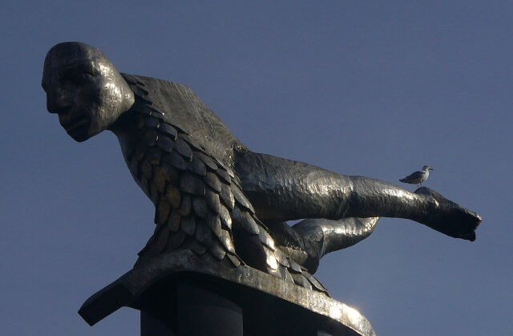
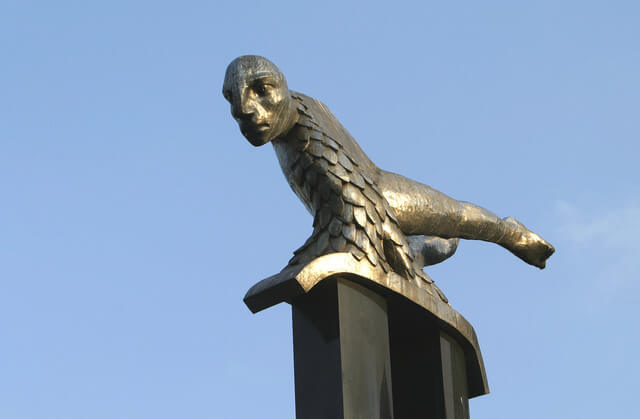

El Sireno


El Sireno es el monumento de Vigo por excelencia. Erguido en la Porta do Sol, esta obra del escultor gallego Francisco Leiro es uno de los símbolos del Vigo moderno, impresionante por su factura y por el elevadísimo pedestal sobre el que se sitúa la estatua.
La escultura, instalada en 1991, representa a un personaje imaginario, un híbrido de pez y hombre, y se ha convertido en uno de los monumentos más representativos de Vigo gracias a su rabiosa modernidad, como un espejo de Vigo, a la que vigila desde su altura.